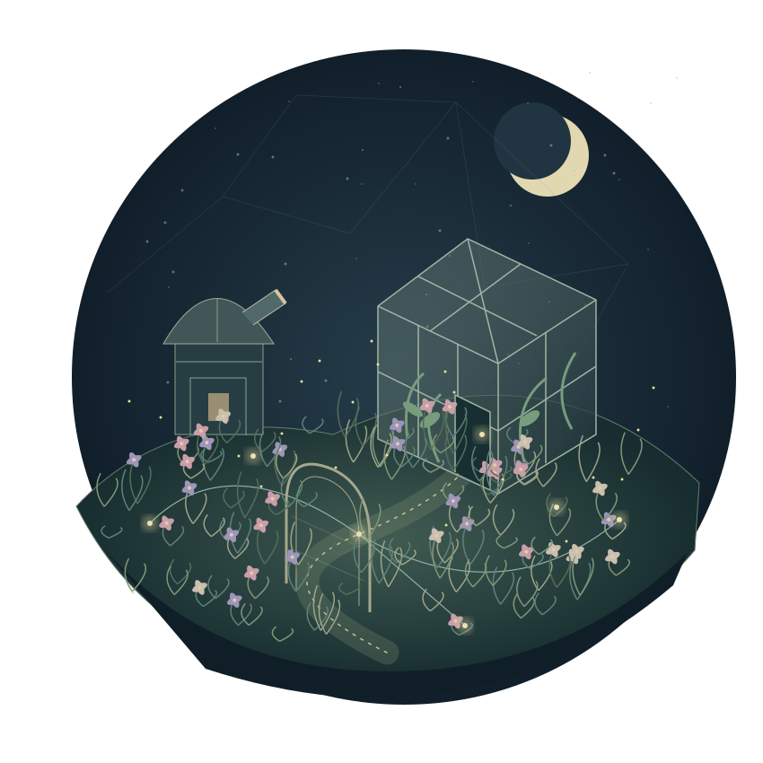

Root
access.
A curious mind.
A growing cyber garden.
I’m Laleen — studying Computer Science & Political Science, and exploring the systems that connect and protect us.
Enter the garden ↓
FIG. 01 — A LIVING SYSTEM 01 SOC observatory → 02 The access greenhouse → 03 System roots → EVERY CONNECTION TELLS A STORY.Between systems
and the people in them.
I’m Laleen Salim, a senior at UNC Charlotte, completing a B.S. in Computer Science and a B.A. in Political Science in December 2026.
My studies bring technical systems into conversation with people, institutions, policy, and risk. This garden is a space for my cybersecurity labs, questions, and work in progress.
Currently exploring · Security analysis · IAM · Cyber defense · GRC · Cloud security
Every signal has
a story beneath it.
A small world with real security principles.
Fictional teaching scenarios. No live systems.
The flower that woke at 2 a.m.
A service account has a burst of failed logins, then a success. Follow the evidence before deciding what it means.
01 / Collect context
Select a slip to inspect it. Dragging is optional.
03 / Record an analyst decision
Review all three evidence slips before recording a decision.
Who belongs behind this door?
Choose a fictional identity. Their keys light up the doors they can currently open. Review whether those permissions still belong.
A role change does not automatically remove old entitlements.
MFA strengthens authentication; it does not make excess permissions appropriate.
Good care starts underneath.
Change this fictional host’s configuration, then compare it with an explicit teaching baseline. A failed check identifies a mismatch, not proof of compromise.
For the ones who
look a little closer.
Small discoveries, no locked content.
Everything important has a direct path.
0 of 11 small discoveries. Saved only in this browser.
Small labs.
Deeper questions.
Three growing investigations into how we detect, grant, and protect.
Student labs · Work in progress
Always
taking root.
A place for the things I’m learning.
And the questions still unfolding.
+ Open the education ledger
University of North Carolina at Charlotte
B.S. Computer Science
B.A. Political Science
Expected graduation: December 2026
+ Skills & field notes
Skills inventory and field notes are awaiting confirmed content. Project topics appear in the case files; they are not a claim of proficiency.
+ Résumé
A résumé will be available here once Laleen adds the reviewed PDF.
Welcome, curious visitor.
This is a little window into the garden.
Type help to find your way.
A small secret, if you like puzzles →
Caesar left a note: URRW. Shift each letter back three places.
Evidence becomes
new branches.
This timeline reflects implemented portfolio features. New lab growth is added only when reviewed evidence is published.
Wonder is better
when you can open it.
Curious how the garden works? Look at the materials, the math, and the decisions behind the experience.
GROWING TOWARD EARLY-CAREER CYBERSECURITY OPPORTUNITIES